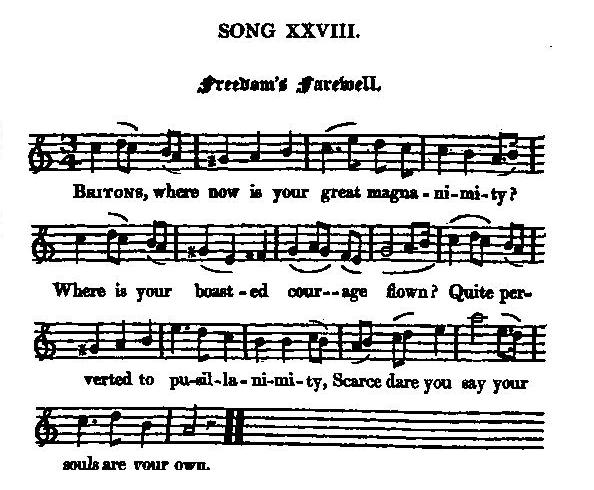

Freedom's Farewell
L'adieu à la liberté
Author unknown
Tune - Melodie"Freedom's Farewell"
from Hogg's "Jacobite Reliques" N°28
Sequenced by Christian Souchon

|
To the lyrics
:
Hogg comments this song, en English song to be sure, in a surprising way: " I inserted this song on account of its stupendous absurdity (!). It must have been written by an incorrigible pedant; for when the overcharged verses and the sublime air are taken together, nothing can be more unique. One can scarce conceive anything more amusing than such a man singing such words to such a tune in a meeting of true Jacobites, when his spirits and loyalty were elevated to the highest pitch; and there is little doubt that his associates thought it excellent sport." Hogg in "Jacobite Relics". (Concerning these curious editing methods, see article "Hogg" ). |
A propos du texte
Hogg fait de ce chant, certainement anglais, un surprenant commentaire: "J'ai ajouté ce chant au présent recueil en raison de son affligeante stupidité (!) . Il doit avoir été écrit par quelque pontifiant personnage. Par son texte prudhommesque et la mélodie solennelle qui l'accompagne, il est unique en son genre. Difficile d'imaginer plus amusant spectacle que tous ces poncifs déclamés sur un tel air devant un aréopage de Jacobites bon teint, dont l'excitation légitimiste a été préalablement portée à son paroxysme. On ne saurait douter que l'auditoire ait dûment apprécié cet exercice." Hogg in "Jacobite Relics". (A propos de ces curieuses méthodes éditoriales, cf. article "Hogg" ). |

|
FREEDOM'S FAREWELL
1. Britons, where now is your great magnanimity? Where is your boasted courage flown? Quite perverted to pusillanimity, Scarce dare you say your souls are your own. 2. What your ancestors won so victoriously, Crown'd with laurels in many a field, You have relinquish'd, and O, most ingloriously, To foreign oppression thus tamely to yield! 3. Freedom now for her flight makes preparative, Weeping she'll quit her once-loved shore; Then shall our loss be past all reparative; Once she leaves us, we see her no more. 4. Gracious Heaven, to assist us excurgitate, We look for thy mighty vindictive hand, To make our oppressors their plunder disgorgitate. And yet preserve a poor sinking land. Source: "The Jacobite Relics of Scotland, being the Songs, Airs and Legends of the Adherents to the House of Stuart" collected by James Hogg, published in Edinburgh by William Blackwood in 1819. |
ADIEU A LA LIBERTE
1. Britanniques, où donc a fui votre grand courage, Votre magnanimité que l'on vantait en tout lieu? A la pusillanimité tous deux ont fait place. Vous dites-vous encor dignes de vos aïeux? 2. Vos ancêtres, ces enfants chéris de la victoire, Avaient au champ d'honneur cueilli tant et tant de lauriers. Vous les avez trahis. Oublieux de votre gloire, Dociles, vous ployez sous le joug étranger! 3. Mais à fuir vers d'autres cieux la liberté s'apprête; A quitter en pleurant, hélas, ces rivages aimés. Rien alors ne saurait nous compenser cette perte. Elle ne revient plus aux bords qu'elle a quittés. 4. Pour que nous les chassions, le Ciel attise nos forges! Qu'à nos bras vengeurs Il veuille accorder tout son soutien Et que de leurs butins, nos oppresseurs rendent gorge. Sois-tu, pauvre patrie, préservée du déclin! (Trad. Christian Souchon(c)2010) |